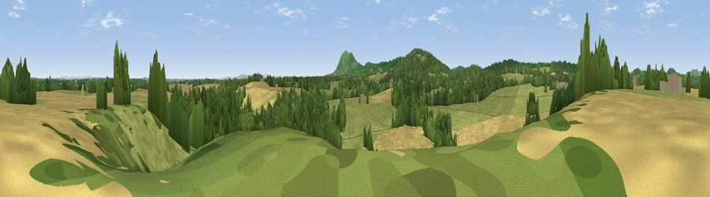

Viewpoint near Brockamin
#24552 in England · top 60% of its area beats it · near BrockaminWhere it is
The exact computed spot (SO 76425 52825). Click the marker for map links.
The view, rendered

A 360° render of this exact spot computed from the terrain model, tree cover and land cover — summer colours, afternoon light, calibrated against photographs of famous viewpoints. Real trees, hedges and buildings will differ in detail.
The panorama
Grey silhouette: terrain skyline in each direction (720 bearings, Earth curvature and refraction included). Dashed green: skyline with trees (+15 m) and buildings (+8 m) as obstacles. Blue strip: how far the ground is visible on each bearing.
Where the view opens
Wedge length = distance to the farthest visible ground on that bearing (vegetation-aware). Rings at 10, 25 and 50 km.
What fills the view
35% cropland · 33% grassland · 32% woodland ·
Angular shares of the visible panorama (visual magnitude), not map area. Landscape diversity 0.49 (0–1 Shannon).
Key numbers
More beautiful places nearby
The staircase of upgrades: each row has a higher view potential than everything closer. Driving times are estimates from straight-line distance, calibrated against real road routing — check an actual route before setting out.
| Place | Direction | Drive | Score |
|---|---|---|---|
| Viewpoint near Storridge | SSW · 2 km | ~6 min | 70.5 |
| Viewpoint near Storridge | SSW · 3 km | ~7 min | 73.5 |
| Viewpoint near West Malvern | S · 6 km | ~12 min | 81.4 |
| North Hill | S · 6 km | ~14 min | 86.8 |
| Worcestershire Beacon | S · 8 km | ~16 min | 87.1 |
| Viewpoint near West Quantoxhead | SSW · 128 km | ~152 min | 87.9 |
| Viewpoint near West Quantoxhead | SSW · 128 km | ~152 min | 88.7 |
| Holdstone Hill | SW · 155 km | ~178 min | 90.2 |
52.17318, -2.34614 · source: screening · position refined by local search. Computed location — check access rights before visiting.